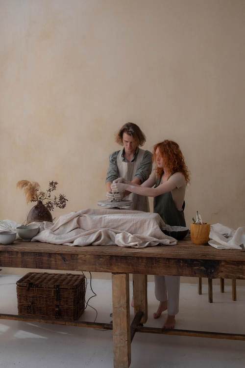

Front to Back


1. Friendship
Friendship is one of the most important characteristics of strong marriages. If partners start their marriage with a weak friendship, they may find difficulty in remaining close over time. Couples who don't see themselves as great friends may be less polite to each other, or they could lose respect for one another. Overall, couples who have been friends throughout their marriages have been happier and more satisfied with their marriages. Here are some ways to work on your friendship with your spouse: Make time for each other. Making time to be with your spouse will help keep the relationship alive. It will help both of you to connect and reconnect often. Schedule time each week specifically for quality time. This could include going on a date, talking, leisure time, or anything the two of you enjoy doing together. Laugh often and create memories.
Refrence 2. networking
Using your network is one of the best ways to find a new job or even a new role at your current company. Why is networking so important? It often comes down to one keyword: referrals. Thirty-one percent of job seekers find listings through professional connections, especially referrals. Networking can open doors to new opportunities that might be out of reach otherwise. Plus, a strong professional relationship can inspire someone to hand-deliver your resume to the hiring manager's desk. This can make you stand out from the crowd and even help you land your dream job one day.
Refrence